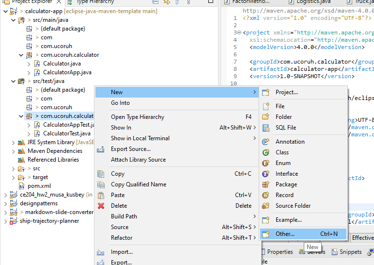
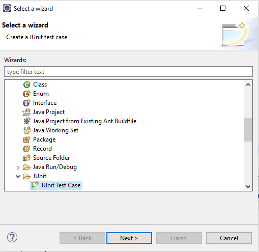
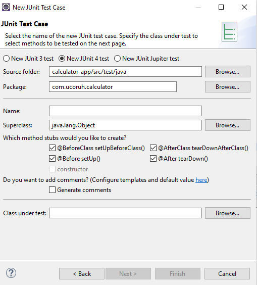
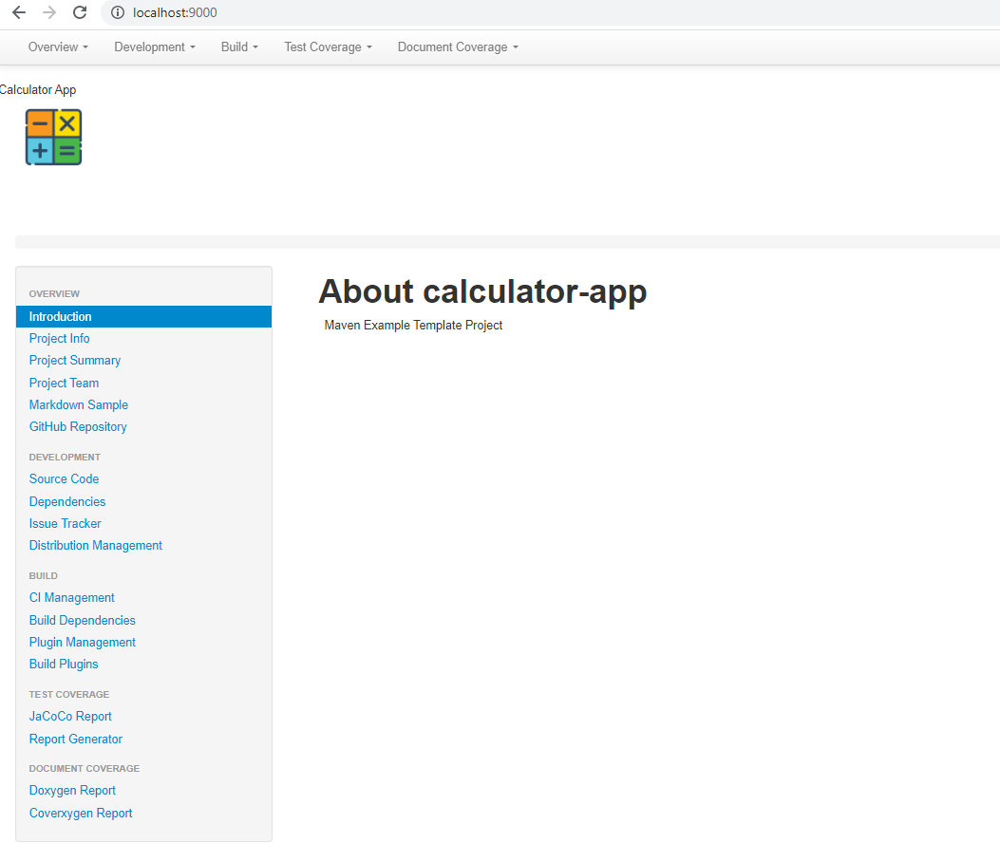
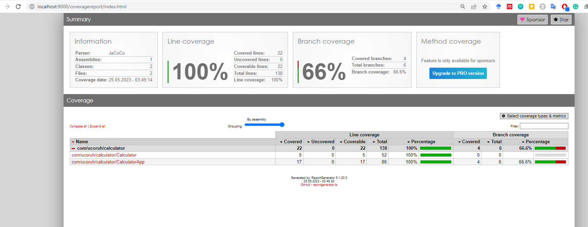
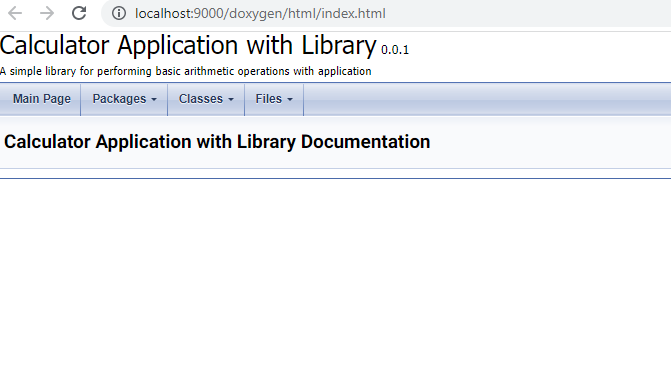
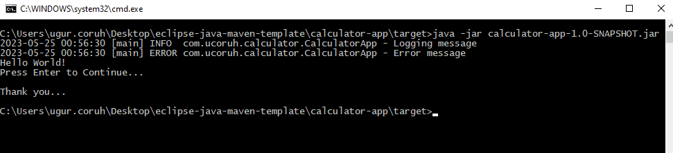

eclipse-java-maven-template
Overview
You will generate eclipse maven project with Junit4 from CLI and. Also you will generate jar and then you will run your application. For more information you can check examples Maven – Maven in 5 Minutes and TheNEXUS | A Community Project
Releases
Platforms
Test Coverage

Coverage
Branch Coverage
Line Coverage
Method Coverage
Install Requirements
-
Eclipse
-
Maven
-
JDK
-
Lcov
-
Coverxygen
-
Reportgenerator
dotnet tool install -g dotnet-reportgenerator-globaltool
-
Choose Licence
Package Manager Windows Setup
We will install required application with package manager on Windows so use following script to install chocolatey and scoop
@echo off
@setlocal enableextensions
@cd /d "%~dp0"
echo Checking if Chocolatey is installed...
if exist "%ProgramData%\Chocolatey\bin\choco.exe" (
echo Chocolatey is already installed.
) else (
echo Installing Chocolatey...
powershell -Command "Set-ExecutionPolicy Bypass -Scope Process -Force; iex ((New-Object System.Net.WebClient).DownloadString('https://chocolatey.org/install.ps1'))"
)
echo Checking if Scoop is installed...
where scoop >nul 2>&1
if %errorlevel%==0 (
echo Scoop is already installed.
) else (
echo Scoop is not installed. Installing Scoop...
powershell Invoke-Expression (New-Object System.Net.WebClient).DownloadString('https://get.scoop.sh')
powershell Set-ExecutionPolicy RemoteSigned -scope CurrentUser
)
pause
Pre-Commit Code Formatter Astyle Installation
Before each commit also with batch script we will format our code with astyle we need to install it with package manager as following script you can visit package manager web site for more details Chocolatey Software | Artistic Style 3.2.1 and https://astyle.sourceforge.net/
@echo off
@setlocal enableextensions
@cd /d "%~dp0"
echo Installing Astyle...
choco install astyle
Astyle tool need configuration there is example configuration named astyle-options.txt
# https://github.com/brchiu/openairinterface5g/blob/master/ci-scripts/astyle-options.txt
# OAI is using a style that is similar to the Google style
--style=google
# long options can be written without the preceding '--'
# Convert tabs to spaces
convert-tabs
# Indentation is 2 spaces
indent=spaces=2
# Indent 'switch' blocks so that the 'case X:' statements are indented in the switch block.
indent-switches
# Indent preprocessor blocks at bracket level 0.
indent-preproc-block
# Indent multi-line preprocessor #define statements.
indent-preproc-define
# Indent C++ comments beginning in column one.
indent-col1-comments
# Pad empty lines around header blocks
break-blocks
delete-empty-lines
# Attach a pointer or reference operator (*, &, or ^) to the variable name (right)
align-pointer=name
# The code line length is 200 characters/columns (this is the maximum allowed by astyle)
max-code-length=200
# If the line contains logical conditionals they will be placed first on the new line.
break-after-logical
# Force use of the linux end of line
# lineend=linux
After installation and config file generation we can format our code with following script this script look for .cs extension and format related files according to configuration in astyle-options.txt
@echo off
@setlocal enableextensions
@cd /d "%~dp0"
echo Formatting Code with Astyle...
astyle --options="astyle-options.txt" --recursive *.cs
pause
Doxygen and Graphviz Setup + MkDocs Material Theme
We will use package manager for this but also we can use several tools I prefer to use following script to install all parties, This setup also use for mkdocs material them documentation generation maybe we can use for project website generation
@echo off
@setlocal enableextensions
@cd /d "%~dp0"
rem force re-install need "--force --force-dependencies -y" parameters
REM Test if Pandoc is installed
where pandoc >nul 2>&1
if %errorlevel%==0 (
echo Pandoc is already installed.
) else (
echo Installing Pandoc...
choco install pandoc -y
)
REM Test if rsvg-convert is installed
where rsvg-convert >nul 2>&1
if %errorlevel%==0 (
echo rsvg-convert is already installed.
) else (
echo Installing rsvg-convert...
choco install rsvg-convert -y
)
REM Test if Python is installed
where python >nul 2>&1
if %errorlevel%==0 (
echo Python is already installed.
) else (
echo Installing Python...
choco install python -y
)
REM Test if Miktex is installed
where miktex >nul 2>&1
if %errorlevel%==0 (
echo Miktex is already installed.
) else (
echo Installing Miktex...
choco install miktex -y
)
REM Test if CuRL is installed
where curl >nul 2>&1
if %errorlevel%==0 (
echo curl is already installed.
) else (
echo Installing CuRL...
choco install curl -y
)
REM Test if MARP-CLI is installed
where marp >nul 2>&1
if %errorlevel%==0 (
echo MARP-CLI is already installed.
) else (
echo Installing MARP-CLI...
choco install marp-cli -y
)
REM Test if Doxygen is installed
where doxygen >nul 2>&1
if %errorlevel%==0 (
echo MARP-CLI is already installed.
) else (
echo Installing Doxygen...
choco install doxygen.install -y
)
REM Test if Doxygen is installed
where dot >nul 2>&1
if %errorlevel%==0 (
echo Graphviz is already installed.
) else (
echo Installing Graphviz...
choco install graphviz -y
)
pip install mkdocs
pip install pymdown-extensions
pip install mkdocs-material
pip install mkdocs-material-extensions
pip install mkdocs-simple-hooks
pip install mkdocs-video
pip install mkdocs-minify-plugin
pip install mkdocs-git-revision-date-localized-plugin
pip install mkdocs-minify-plugin
pip install mkdocs-static-i18n
pip install mkdocs-with-pdf
pip install qrcode
pip install mkdocs-awesome-pages-plugin
pip install mkdocs-embed-external-markdown
pip install mkdocs-include-markdown-plugin
pip install mkdocs-ezlinks-plugin
pip install mkdocs-git-authors-plugin
pip install mkdocs-git-committers-plugin
pip install mkdocs-exclude
pip install pptx2md
pause
After doxygen installation create default doxygen file with -g option
doxygen -g
This will create Doxyfile for us to modify. Use Doxywizard to modify file. Be sure that your output directory should be ./docs and all warnings should be opened and warnings stop operations.
coverxygen Setup
We are parsing doxygen XML output with coverxygen and generate info file for LCOV. This tool generate output that LCOV use and generate HTML document coverage report
To install coverxygen you need python and pip
@echo off
@setlocal enableextensions
@cd /d "%~dp0"
echo Installing converxygen doxygen XML parser
pip install coverxygen
LCOV Setup
LCOV is use to generate HTML document coverage tool in this project, but it can be used for different purposes. You can use choco package manager to install application as follow
@echo off
@setlocal enableextensions
@cd /d "%~dp0"
echo Installing Report Generator...
choco install lcov -y
echo lcov and genhtml located on C:\ProgramData\chocolatey\lib\lcov\tools\bin\
pause
ReportGenerator Setup
We need to install reportgenerator for creation of HTML test reports, we will use choco to install visit package manager web site Chocolatey Software | ReportGenerator (Portable) - Generates reports for various code coverage tools 5.1.20
@echo off
@setlocal enableextensions
@cd /d "%~dp0"
echo Installing Report Generator...
choco install reportgenerator.portable
Repository Setup
Github Repositoy Creation
First create a empty project in github and clone it to your PC,
Pre-Commit Action Restrictions
Use following pre-commit script and replace it with .git/hook/precommit
#!/bin/bash
# Installation:
# Copy this script as pre-commit to .git/hooks folder
OPTIONS="--options=astyle-options.txt"
# Check if .gitignore file exists
if [ ! -f astyle-options.txt ]; then
echo "[!] astyle-options.txt file not found. Please make sure the astyle-options.txt file is present." >&2
exit 1
fi
RETURN=0
ASTYLE=$(command -v astyle)
if [ $? -ne 0 ]; then
echo "[!] AStyle is not installed. Unable to check source file format policy." >&2
exit 1
fi
# Check if .gitignore file exists
if [ ! -f .gitignore ]; then
echo "[!] .gitignore file not found. Please make sure the .gitignore file is present." >&2
exit 1
fi
# Check if README.md file exists
if [ ! -f README.md ]; then
echo "[!] README.md file not found. Please make sure the README.md file is present." >&2
exit 1
fi
# Check if .gitignore file exists
if [ ! -f Doxyfile ]; then
echo "[!] Doxyfile file not found. Please make sure the Doxyfile file is present." >&2
exit 1
fi
FILES=$(git diff --cached --name-only --diff-filter=ACMRTUXB | grep -E "\.(cs|java|c|cpp|h)$")
for FILE in $FILES; do
FORMATTED=$( "$ASTYLE" $OPTIONS < "$FILE" 2>&1 )
if [ $? -ne 0 ]; then
echo "[!] Error formatting $FILE:" >&2
echo "$FORMATTED" >&2
RETURN=1
elif [ -n "$FORMATTED" ]; then
echo "Formatted $FILE"
echo "$FORMATTED"
echo ""
echo "$FORMATTED" > "$FILE"
git add "$FILE"
fi
done
if [ $RETURN -eq 1 ]; then
echo "" >&2
echo "Make sure you have run AStyle with the following options:" >&2
echo $OPTIONS >&2
fi
exit $RETURN
This script will check astyle-options.txt file, gitignore file, README.md file and Doxyfile is exist if not it will be terminate your commit operation. Also after astyle installation and astyle-options.txt generation it will automatically format your source code before each commit. Formatting configuration will be stored in astyle-options.txt .
Create .gitignore with TOPTAL API via batch script
Use the following script to generate .gitignore file, you can change gitignore file by changing the configuration after https://www.toptal.com/developers/gitignore/api
This is the selected configuration
c,csharp,vs,visualstudio,visualstudiocode,java,maven,c++,cmake,eclipse,netbeans
@echo off
set API_URL=https://www.toptal.com/developers/gitignore/api/c,csharp,vs,visualstudio,visualstudiocode,java,maven,c++,cmake,eclipse,netbeans
set OUTPUT_FILE=.gitignore
REM Set the running folder to the current working folder
cd /d "%~dp0"
REM Download the API results using curl
curl -s -o %OUTPUT_FILE% %API_URL%
echo Downloaded .gitignore file from %API_URL% and saved as %OUTPUT_FILE%
pause
Create an Empty README.md file
Create and EMPTY README.md file and during project fill required parts
Create Default Doxyfile
Use following command to generate default Doxyfile if you didn't create or you can use pre-configured configuration and you can edit over this configurations. Be sure that your output directory should be ./docs and all warnings should be opened and warnings stop operations.
doxygen -g
First commit is ready, You can commit and push your work.
You can use gitextension to commit your work, check if you get any error than return steps and check missing parts.
Creating a Project
mvn archetype:generate -DgroupId=com.ucoruh.calculator -DartifactId=calculator-app -DarchetypeArtifactId=maven-archetype-quickstart -DarchetypeVersion=1.4 -DinteractiveMode=false
Import Project to Eclipse
Use import existing maven project option to import project to Eclipse
Rename Files
Rename App.java to CalculatorApp.java and AppTest.java to CalculatorAppTest.java and Generate Calculator.java and CalculatorTest.java
package com.ucoruh.calculator;
import org.slf4j.LoggerFactory;
import ch.qos.logback.classic.Logger;
public class Calculator {
private static final Logger logger = (Logger) LoggerFactory.getLogger(Calculator.class);
/**
*
* @param a
* @param b
* @return
*/
public int add(int a, int b) {
logger.info("Logging message");
logger.error("Error message");
return a + b;
}
}
package com.ucoruh.calculator;
import java.io.IOException;
import org.slf4j.LoggerFactory;
import ch.qos.logback.classic.Logger;
/**
* Hello world!
*
*/
public class CalculatorApp {
private static final Logger logger = (Logger) LoggerFactory.getLogger(CalculatorApp.class);
public static void main(String[] args) {
logger.info("Logging message");
logger.error("Error message");
System.out.println("Hello World!");
try {
if(args.length>0)
{
if(args[0].equals("1"))
{
throw new IOException("Dummy Exception...");
}
}
System.out.println("Press Enter to Continue...");
System.in.read();
System.out.println("Thank you...");
} catch (IOException e) {
logger.error(e.toString());
e.printStackTrace();
}
}
}
Generate test with add new unit test feature in Eclipse



/**
*
*/
package com.ucoruh.calculator;
import static org.junit.Assert.*;
import org.junit.After;
import org.junit.AfterClass;
import org.junit.Before;
import org.junit.BeforeClass;
import org.junit.Test;
/**
* @author ugur.coruh
*
*/
public class CalculatorTest {
/**
* @throws java.lang.Exception
*/
@BeforeClass
public static void setUpBeforeClass() throws Exception {
}
/**
* @throws java.lang.Exception
*/
@AfterClass
public static void tearDownAfterClass() throws Exception {
}
/**
* @throws java.lang.Exception
*/
@Before
public void setUp() throws Exception {
}
/**
* @throws java.lang.Exception
*/
@After
public void tearDown() throws Exception {
}
@Test
public void testAddition() {
Calculator calculator = new Calculator();
int result = calculator.add(2, 3);
assertEquals(5, result);
}
}
package com.ucoruh.calculator;
import static org.junit.Assert.*;
import java.io.InputStream;
import java.io.PrintStream;
import java.io.ByteArrayInputStream;
import java.io.ByteArrayOutputStream;
import org.junit.After;
import org.junit.AfterClass;
import org.junit.Before;
import org.junit.BeforeClass;
import org.junit.Test;
public class CalculatorAppTest {
@BeforeClass
public static void setUpBeforeClass() throws Exception {
}
@AfterClass
public static void tearDownAfterClass() throws Exception {
}
@Before
public void setUp() throws Exception {
}
@After
public void tearDown() throws Exception {
}
@Test
public void testMainSuccess() {
// Redirect System.in and System.out
InputStream originalIn = System.in;
PrintStream originalOut = System.out;
// Create a ByteArrayInputStream with the desired input
String input = System.lineSeparator(); // Pressing "Enter" key
ByteArrayInputStream inputStream = new ByteArrayInputStream(input.getBytes());
// Redirect System.in to the ByteArrayInputStream
System.setIn(inputStream);
// Create a ByteArrayOutputStream to capture the output
ByteArrayOutputStream outputStream = new ByteArrayOutputStream();
System.setOut(new PrintStream(outputStream));
String[] args = new String[] {"0"};
// Call the main method of CalculatorApp
CalculatorApp.main(args);
// Restore original System.in and System.out
System.setIn(originalIn);
System.setOut(originalOut);
// Assert the desired behavior based on the output
assertTrue(true);
}
@Test
public void testMainError() {
// Redirect System.in and System.out
InputStream originalIn = System.in;
PrintStream originalOut = System.out;
// Create a ByteArrayInputStream with the desired input
String input = System.lineSeparator(); // Pressing "Enter" key
ByteArrayInputStream inputStream = new ByteArrayInputStream(input.getBytes());
// Redirect System.in to the ByteArrayInputStream
System.setIn(inputStream);
// Create a ByteArrayOutputStream to capture the output
ByteArrayOutputStream outputStream = new ByteArrayOutputStream();
System.setOut(new PrintStream(outputStream));
String[] args = new String[] {"1"};
// Call the main method of CalculatorApp
CalculatorApp.main(args);
// Restore original System.in and System.out
System.setIn(originalIn);
System.setOut(originalOut);
// Assert the desired behavior based on the output
assertTrue(true);
}
}
Update pom.xml
<?xml version="1.0" encoding="UTF-8"?>
<project xmlns="http://maven.apache.org/POM/4.0.0"
xmlns:xsi="http://www.w3.org/2001/XMLSchema-instance"
xsi:schemaLocation="http://maven.apache.org/POM/4.0.0 http://maven.apache.org/xsd/maven-4.0.0.xsd">
<modelVersion>4.0.0</modelVersion>
<!-- The Basics -->
<groupId>com.ucoruh.calculator</groupId>
<artifactId>calculator-app</artifactId>
<version>1.0-SNAPSHOT</version>
<packaging>jar</packaging>
<!-- More Project Information -->
<name>calculator-app</name>
<url>https://github.com/ucoruh/eclipse-java-maven-template</url>
<scm>
<url>https://github.com/ucoruh/eclipse-java-maven-template</url>
</scm>
<inceptionYear>2023</inceptionYear>
<developers>
<developer>
<name>Asst. Prof. Dr. Ugur CORUH</name>
<organization>RTEU</organization>
<email>ugur.coruh@erdogan.edu.tr</email>
<roles>
<role>Developer</role>
<role>Designer</role>
</roles>
</developer>
<developer>
<name>Other Person</name>
<organization>RTEU</organization>
<email>mail@gmail.com</email>
<roles>
<role>Developer</role>
</roles>
</developer>
</developers>
<contributors>
<contributor>
<name>Asst. Prof. Dr. Ugur CORUH</name>
<email>ugur.coruh@erdogan.edu.tr</email>
<organization>RTEU</organization>
<roles>
<role>Developer</role>
<role>Designer</role>
</roles>
</contributor>
<contributor>
<name>Other Person</name>
<organization>RTEU</organization>
<email>mail@gmail.com</email>
<roles>
<role>Developer</role>
</roles>
</contributor>
</contributors>
<description>Maven Example Template Project</description>
<organization>
<name>Recep Tayyip Erdogan University</name>
<url>www.erdogan.edu.tr</url>
</organization>
<!-- Environment Settings -->
<issueManagement>
<system>Github</system>
<url>https://github.com/ucoruh/eclipse-java-maven-template</url>
</issueManagement>
<ciManagement>
<system>Github</system>
<notifiers>
<notifier>
<address>ugur.coruh@erdogan.edu.tr</address>
<sendOnSuccess>true</sendOnSuccess>
<sendOnError>true</sendOnError>
<sendOnFailure>true</sendOnFailure>
<sendOnWarning>true</sendOnWarning>
</notifier>
</notifiers>
<url>https://github.com/ucoruh/eclipse-java-maven-template</url>
</ciManagement>
<repositories>
<repository>
<id>eclipse-java-maven-template</id>
<name>eclipse-java-maven-template</name>
<url>https://github.com/ucoruh/eclipse-java-maven-template</url>
</repository>
</repositories>
<distributionManagement>
<site>
<name>https://github.com/ucoruh/eclipse-java-maven-template</name>
<id>eclipse-java-maven-template</id>
</site>
<downloadUrl>https://github.com/ucoruh/eclipse-java-maven-template</downloadUrl>
<repository>
<id>eclipse-java-maven-template</id>
<name>eclipse-java-maven-template</name>
<url>https://github.com/ucoruh/eclipse-java-maven-template</url>
</repository>
</distributionManagement>
<properties>
<project.build.sourceEncoding>UTF-8</project.build.sourceEncoding>
<maven.compiler.source>1.8</maven.compiler.source>
<maven.compiler.target>1.8</maven.compiler.target>
</properties>
<dependencies>
<dependency>
<groupId>junit</groupId>
<artifactId>junit</artifactId>
<version>4.11</version>
<scope>test</scope>
</dependency>
<dependency>
<groupId>org.hamcrest</groupId>
<artifactId>hamcrest-all</artifactId>
<version>1.3</version>
<scope>test</scope>
</dependency>
<!-- SLF4J API -->
<dependency>
<groupId>org.slf4j</groupId>
<artifactId>slf4j-api</artifactId>
<version>1.7.32</version>
</dependency>
<!-- Logback Implementation -->
<dependency>
<groupId>ch.qos.logback</groupId>
<artifactId>logback-classic</artifactId>
<version>1.2.6</version>
</dependency>
</dependencies>
<build>
<plugins>
<plugin>
<groupId>org.apache.maven.plugins</groupId>
<artifactId>maven-compiler-plugin</artifactId>
<configuration>
<source>1.8</source>
<target>1.8</target>
</configuration>
</plugin>
<plugin>
<groupId>org.apache.maven.plugins</groupId>
<artifactId>maven-surefire-plugin</artifactId>
<configuration>
<includes>
<include>**/CalculatorAppTest.java</include>
<include>**/CalculatorTest.java</include>
</includes>
</configuration>
</plugin>
<plugin>
<groupId>org.jacoco</groupId>
<artifactId>jacoco-maven-plugin</artifactId>
<version>0.8.7</version>
<executions>
<execution>
<goals>
<goal>prepare-agent</goal>
</goals>
</execution>
<execution>
<id>report</id>
<phase>test</phase>
<goals>
<goal>report</goal>
</goals>
</execution>
</executions>
</plugin>
<plugin>
<groupId>org.apache.maven.plugins</groupId>
<artifactId>maven-site-plugin</artifactId>
<version>4.0.0-M8</version>
<configuration>
<port>9000</port>
<tempWebappDirectory>${basedir}/target/site</tempWebappDirectory>
</configuration>
</plugin>
<!-- Maven Shade Plugin -->
<plugin>
<groupId>org.apache.maven.plugins</groupId>
<artifactId>maven-shade-plugin</artifactId>
<version>3.2.4</version>
<executions>
<execution>
<phase>package</phase>
<goals>
<goal>shade</goal>
</goals>
<configuration>
<createDependencyReducedPom>false</createDependencyReducedPom>
<transformers>
<transformer
implementation="org.apache.maven.plugins.shade.resource.ManifestResourceTransformer">
<mainClass>
com.ucoruh.calculator.CalculatorApp</mainClass>
</transformer>
</transformers>
</configuration>
</execution>
</executions>
</plugin>
</plugins>
<pluginManagement><!-- lock down plugins versions to avoid using Maven
defaults (may be moved to parent pom) -->
<plugins>
<!-- clean lifecycle, see
https://maven.apache.org/ref/current/maven-core/lifecycles.html#clean_Lifecycle -->
<plugin>
<artifactId>maven-clean-plugin</artifactId>
<version>3.1.0</version>
</plugin>
<!-- default lifecycle, jar packaging: see
https://maven.apache.org/ref/current/maven-core/default-bindings.html#Plugin_bindings_for_jar_packaging -->
<plugin>
<artifactId>maven-resources-plugin</artifactId>
<version>3.0.2</version>
</plugin>
<plugin>
<artifactId>maven-compiler-plugin</artifactId>
<version>3.8.0</version>
</plugin>
<plugin>
<artifactId>maven-surefire-plugin</artifactId>
<version>2.22.1</version>
</plugin>
<plugin>
<artifactId>maven-jar-plugin</artifactId>
<version>3.0.2</version>
</plugin>
<plugin>
<artifactId>maven-install-plugin</artifactId>
<version>2.5.2</version>
</plugin>
<plugin>
<artifactId>maven-deploy-plugin</artifactId>
<version>2.8.2</version>
</plugin>
<!-- site lifecycle, see
https://maven.apache.org/ref/current/maven-core/lifecycles.html#site_Lifecycle -->
<plugin>
<artifactId>maven-site-plugin</artifactId>
<version>3.7.1</version>
</plugin>
<plugin>
<artifactId>maven-project-info-reports-plugin</artifactId>
<version>3.0.0</version>
</plugin>
</plugins>
</pluginManagement>
</build>
</project>
Generate Project Site Files
-
site.xml
-
resources
-
images
-
banner.png
-
logo.png
-
-
markdown
- overview.md
-
-
You can use files in project
Build the Project
Enter pom.xml root folder and run following command to test and generate jar file
mvn clean test site package
Run Project
You can run application by specify the Main function
java -cp calculator-app-1.0-SNAPSHOT.jar com.ucoruh.calculator.CalculatorApp
Output
C:\Users\ugur.coruh\Desktop\eclipse-java-maven-template\calculator-app\target>java -cp calculator-app-1.0-SNAPSHOT.jar com.ucoruh.calculator.CalculatorApp
Hello World!
Generate HTML Coverage Report
reportgenerator "-reports:target/site/jacoco/jacoco.xml" "-sourcedirs:src/main/java" "-targetdir:coveragereport" -reporttypes:Html
Output
C:\Users\ugur.coruh\Desktop\eclipse-java-maven-template\calculator-app>reportgenerator "-reports:target/site/jacoco/jacoco.xml" "-sourcedirs:src/main/java" "-targetdir:coveragereport" -reporttypes:Html
2023-05-24T17:26:40: Arguments
2023-05-24T17:26:40: -reports:target/site/jacoco/jacoco.xml
2023-05-24T17:26:40: -sourcedirs:src/main/java
2023-05-24T17:26:40: -targetdir:coveragereport
2023-05-24T17:26:40: -reporttypes:Html
2023-05-24T17:26:40: Writing report file 'coveragereport\index.html'
2023-05-24T17:26:40: Report generation took 0,2 seconds
C:\Users\ugur.coruh\Desktop\eclipse-java-maven-template\calculator-app>

Run Maven Site
mvn site:run
Use CTRL+C to cancel from console

This has code coverage and documentation coverage reports also



Clone-Test-Generate WebSite-Package-Generate Report-Run Web Site
@echo off
echo Enable necessary extensions
@setlocal enableextensions
echo Change the current working directory to the script directory
@cd /d "%~dp0"
git clone https://github.com/ucoruh/eclipse-java-maven-template.git
echo Get the current directory
set "currentDir=%CD%"
echo Change directory to calculator-app
cd calculator-app
echo Perform Maven clean, test, site generation, and packaging
call mvn clean test site package
echo Return to the previous directory
cd ..
echo Generate Doxygen HTML and XML Documentation
call doxygen Doxyfile
echo Change directory to calculator-app
cd calculator-app
echo Generate ReportGenerator HTML Report
call reportgenerator "-reports:target/site/jacoco/jacoco.xml" "-sourcedirs:src/main/java" "-targetdir:target/site/coveragereport" -reporttypes:Html
echo Display information about the binary file
echo Our Binary is a Single Jar With Dependencies. You Do Not Need to Compress It.
echo Return to the previous directory
cd ..
echo Generate Doxygen Coverage Report
echo Create coverxygen directory
cd calculator-app
cd target
cd site
mkdir coverxygen
cd ..
cd ..
cd ..
echo Run Coverxygen
call python -m coverxygen --xml-dir ./calculator-app/target/site/doxygen/xml --src-dir ./ --format lcov --output ./calculator-app/target/site/coverxygen/lcov.info --prefix %currentDir%\calculator-app\
echo Run lcov genhtml
call perl C:\ProgramData\chocolatey\lib\lcov\tools\bin\genhtml ./calculator-app\target\site\coverxygen\lcov.info -o calculator-app/target/site/coverxygen
echo Package Coverage Report-1
call tar -czvf test-jacoco-report.tar.gz -C calculator-app/target/site/jacoco .
echo Package Coverage Report-2
call tar -czvf test-coverage-report.tar.gz -C calculator-app/target/site/coveragereport .
echo Package Code Documentation
call tar -czvf application-documentation.tar.gz -C calculator-app/target/site/doxygen .
echo Package Product Site
call tar -czvf application-site.tar.gz -C target/site .
echo Return to the previous directory
cd ..
echo Operation Completed!
pause
Run Web Site
@echo off
@setlocal enableextensions
@cd /d "%~dp0"
cd calculator-app
echo Run Web Site
echo to Exit Use CTRL+Z CTRL+C
start http://localhost:9000/
mvn site:run
echo Operation Completed!
pause
Run Jar File
@echo off
@setlocal enableextensions
@cd /d "%~dp0"
echo Running Application
java -jar calculator-app/target/calculator-app-1.0-SNAPSHOT.jar
echo Operation Completed!
pause
